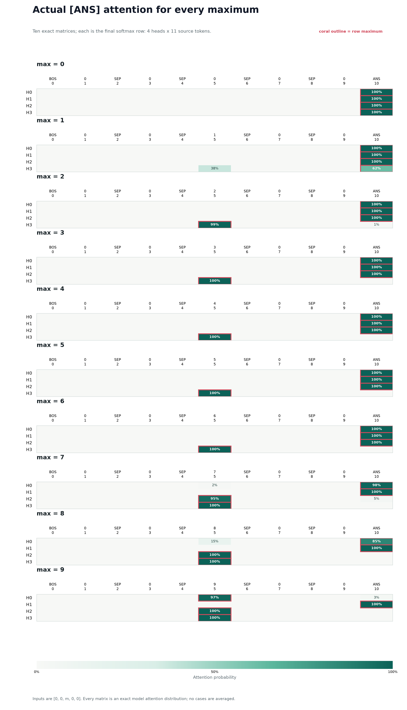

Main results¶
Notation¶
Matrices¶
| Matrix | Shape | Symbol |
|---|---|---|
| Embedding matrix | 14 x 64 |
\(W_E\) |
| Unembedding matrix | 64 x 14 |
\(W_U\) |
| Query matrix of head "h" | 64 x 16 |
\(W_Q^h\) |
| Key matrix of head "h" | \(W_K^h\) | |
| Value matrix of head "h" | \(W_V^h\) | |
| \(W_O\) of each head | 16 x 64 |
\(W_O^h\) |
It is generally considered to be one large matrix while computing (64 x 64).
But to interpret its easy to think that each head has its own output matrix.
Value vector¶
Value vector after doing weighted attention of head h (N x 16, but last row
would suffice to explain so considered 1 x 16): \(V_h\), which is basically
(Attention x (\(W_V\) x residual stream)).
Sum of head outputs¶
Sum of all heads output just before multiplying with unembdding matrix (N x
64, but last row suffices so 1 x 64):
Notation check
The draft above is preserved. With the displayed row-vector shapes,
\(V_h\) is 1 x 16 and \(W_O^h\) is 16 x 64, so the dimensionally
consistent product is \(V_h W_O^h\). The summed final-row write is therefore
\(\sum_h V_h W_O^h\). PyTorch stores linear-layer weights transposed relative
to this mathematical row-vector convention.
Looking at attention patterns in each head at ANS token¶
The final response we care about is the prediction of the model at last token
(ANS token). So its sufficient to look at last row of the prediction logits
which is of size N x Vocab Size. We only need -1 x Vocab size. If we trace
back down, in each head, all that matters for the computation is the last row
of the attention matrix. The last row of the attention matrix checks what
tokens the ANS token attends to?
Below is the plot for
Display specification
Show every maximum from
0through9separately. In each case, show a colored4 x Nmatrix: four attention heads byNsource tokens, with token identities at the top. Each matrix is the softmaxed last row for the[ANS]query.

[ANS] query. Each
matrix has four head rows and eleven source-token columns. All ten maxima
are shown separately; no attention matrices are averaged.
- \(W_Q\) ANS x \(W_K\) max number vs \(W_Q\) ANS x \(W_K\) ANS in each head
How to read this diagnostic
These are the model's actual attention distributions after softmax over all
11 source positions. The coral outline marks the largest entry in each
head row. Inputs use the matched form [0, 0, m, 0, 0], with the unique
nonzero maximum at source position 5.
Max 1 is the important soft case: H3 gives approximately 62% to
[ANS] and 38% to the 1 token. From max 2 onward, the recruited
heads place nearly all their attention on the maximum token.